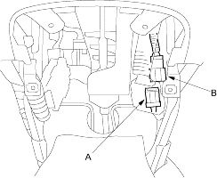
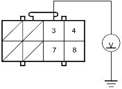
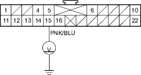
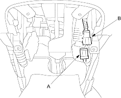

- Turn the ignition switch OFF.
- Disconnect the C4 connector (A) from the C3 connector (B).

- Turn the ignition switch ON (II).
- Check for voltage between the No. 3 terminal of the O1i connector and body ground. There should be 0.5 V or less.
O1i CONNE0CTOR

Wire side of female terminals
Is the voltage as specified?
YES - Short to power in dashboard wire harness A; replace dashboard wire harness A. 
NO - Short to power in the floor wire harness or in the OPDS unit harness; if the OPDS unit harness is OK, replace the floor wire harness.
- Turn the ignition switch OFF.
- Backprobe the No. 21 terminal of the C1 connector. Do not disconnect the C1 connector from the gauge assembly.
- Turn the ignition switch ON (II).
- Check for voltage between the No. 15 terminal of C1 connector and body ground. There should be battery voltage.
C1 CONNECTOR

Wire side of female terminals
Is there battery voltage?
YES - Go to step 28.
NO - Go to step 32.
- Turn the ignition switch OFF.
- Disconnect the C4 connector (A) from the C3 connector (B).
